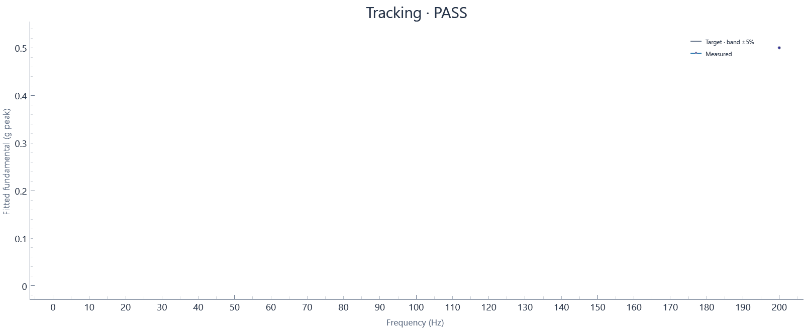

2026-10-30T09:44:49.422815-04:00 · Hardware · Setup 56c92ba2a867
Run: complete · 96 blocks · 96.61 wall seconds · 96.00 sample seconds
Tracking tolerance: ±5%

| Hz | Target g peak | Settled g peak | Error % | Raw transient peak g | Result |
|---|---|---|---|---|---|
| 200 | 0.5 | 0.50011 | +0.023 | 0.546 | PASS |
Tracking assessment against configured tolerance, separate from run completion. Sine uses the last settling-window blocks at each dwell; transient raw peaks are reported separately. Random excludes startup/ramp and the initial settling interval; all subsequent full-target blocks are evaluated.
Raw peak means the largest absolute acquired sample; it differs from fitted sine amplitude and RMS.
Calibration: 2026-10-29 current shaker/amp/load; NI USB-4431 Dev1 ai0, 10 mV/g, 2.1 mA IEPE. Last-block tone fit at 0.5 g-peak nominal from 02b82812; revalidate after setup changes.
Input: Dev1/ai0: Acceleration input in g (2.1 mA IEPE)
Clocks: Independent AI/AO clocks configured